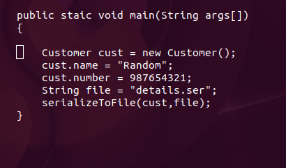
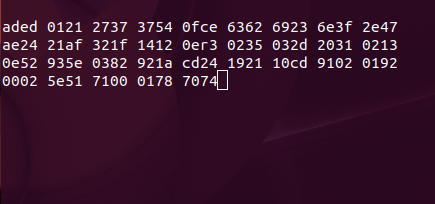

Insecure Deserialization

Object Oriented Programming Languages like Java operate on the concept of Objects.
An Object is another name for things, that represent real world entities. It has a state,behaviour, and an identity.
Let us supppose we wish to see the serialized form of the following sinppet of code.
Byte Streams are used to perform input and output of 8-bit bytes.
All byte streams are desendents of InputStream and Output Stream
Objects are converted to byte streams (which are generally hex equivalents of the object defined)
For example here is a snippet of how a byte stream would look like to you.
Conversion of data into byte stream is called serialization.
This is done so that it can be stored in the database/file/server or if it is meant to be sent across the netowork.
Java makes use of java.io.Serializable to implement serialization.
The process of converting sequence of byte streams back to its original form (Objects here) is called Deserialization.
The stream of data comprises metadata, the type of infomation, and the values as well which is converted back to object/s.
Java Deserialization Vulnerability is also known as Java Unserialize flawand Java Object Serialize Flaw.
This occurs when the the application performs deserialization without performing any check on the byte stream (whether it is the same byte stream that was serialized).
If a user manages to upload,modify or even input a well crafted payload, it could give him/her remote access to the server.